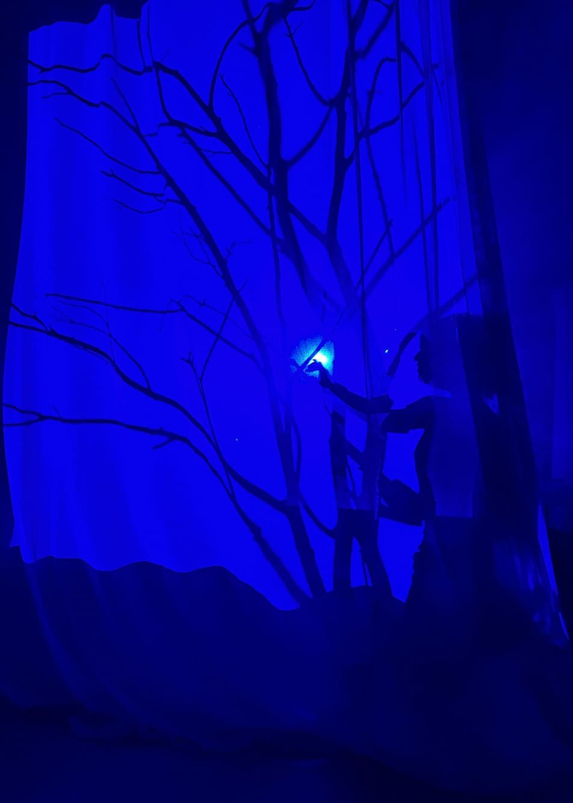

3. A Dialogue with Light by Antoni Arola (B1F)
Art installation by Antoni Arola inside his first solo exhibition at Karimoku Research, TokyoIn October 2025, Santa & Cole presented the work of Antoni Arola at the KARIMOKU RESEARCH CENTER in Tokyo. This three-floor exhibition went through all the paths the artist follows in order to dialogue with light. Visitors encountered distinct perspectives through immersive installations, product design, and moments from the creative process—where light becomes matter, intuition transforms into method, and every form is an act of discovery.
Inside this context, I got to work on the B1 Floor, dedicated to an art installation. This installation consisted of a mechanical tree that slowly rotated, caressed by a plane of light that also turned slowly. Occasionally, one of the tree’s branches would activate a sensor that would trigger the sound of a cricket, which would also affect the light. All those elements together created a beautiful and peaceful atmosphere that captivated every visitor.


During this time at the studio, I had the pleasure of working on all the phases of this installation’s development: from experimentation to the design and formalization. I was asked to experiment with the circular movement of this main tree figure through light and sound, which I did using different tools: projectors, lasers, video tracking or generative sound.
Once its form was clear, I developed the technical aspect of the installation: from projection to the tree’s physical interaction with sound and light, as well as how everything should be implemented in the place in order to work. In order to do that, I mainly used ESP32, sensors, and Resolume, all connected through OSC.




Project by Antoni Arola
Design Assistant at Antoni Arola Studio, 2025
Design Assistant at Antoni Arola Studio, 2025